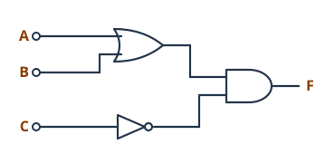

0221 · Montaje y mantenimiento de equipo · Tema 2 (UT2) · Teoría
Teoría — Estructura funcional del ordenador y arquitectura de buses
Qué se evalúa · RA y criterios
Qué criterios cubre esta página
RA1. Selecciona los componentes que integran un equipo microinformático estándar, describiendo sus funciones y comparando prestaciones de distintos fabricantes.
- a) Se han descrito los bloques que componen un equipo microinformático y sus funciones.
- b) Se ha reconocido la arquitectura de buses.
Los apartados 2.1 a 2.3 (representación de la información y puertas lógicas) son la base para entender cómo trabaja la CPU por dentro. No se evalúan por separado.
2.1 Del mundo analógico al digital
Un ordenador es una máquina que procesa información: recibe datos, los transforma siguiendo las instrucciones de un programa y devuelve resultados. Antes de ver cómo lo hace, hay que entender qué tipo de información maneja.
Información analógica
Puede tomar infinitos valores entre dos puntos. La temperatura de una habitación no salta de 20 °C a 21 °C: pasa por 20,1, 20,15, 20,151… La voz, la luz o la velocidad de un coche también son analógicas.
Información digital
Solo toma valores concretos, sin nada en medio. Un termómetro digital que muestra «20,5» no puede mostrar nada entre 20,5 y 20,6. Los ordenadores actuales son digitales.
¿Por qué solo dos estados?
Dentro del ordenador la información se guarda y se mueve como tensión eléctrica. Distinguir solo dos niveles («hay tensión» y «no hay tensión») es muy fiable: aunque el cable recoja algo de ruido, es difícil confundir uno con otro. Si hubiera que distinguir diez niveles, cualquier interferencia provocaría errores.
A esos dos estados los llamamos 1 y 0 (también alto/bajo, H/L o verdadero/falso). Los primeros circuitos digitales trabajaban con 0 V y 5 V. Hoy se usan tensiones mucho más bajas para gastar menos y calentarse menos: el núcleo de un procesador actual funciona alrededor de 1 V y la memoria DDR5 a 1,1 V.
El bit (binary digit, dígito binario) es la unidad mínima de información: un único 0 o 1. Todo lo que hay en un ordenador (textos, fotos, música, programas) se guarda como largas secuencias de bits.
Agrupaciones de bits
| Nombre | Bits | Combinaciones posibles | Dónde lo verás |
|---|---|---|---|
| Bit | 1 | 2 | Un interruptor: encendido o apagado |
| Nibble (cuarteto) | 4 | 16 | Una cifra hexadecimal |
| Byte (octeto) | 8 | 256 | Un carácter de texto; la unidad de las capacidades |
| Palabra (word) | 16 | 65 536 | Tamaño de dato de los primeros PC (procesador 8086) |
| Doble palabra (dword) | 32 | ≈ 4 300 millones | Procesadores y sistemas operativos de 32 bits |
| Cuádruple palabra (qword) | 64 | ≈ 1,8 × 1019 | Procesadores y sistemas operativos de 64 bits actuales |
Fíjate en la tercera columna: con n bits se pueden formar 2n combinaciones. Esta idea aparece una y otra vez en el tema.
Las teclas numéricas son 10 (del 0 al 9). Con 3 bits salen 23 = 8 combinaciones: no llegan. Con 4 bits salen 24 = 16: sobran 6, pero ya caben las 10. Se necesitan 4 bits. En general, se busca el menor n que cumpla 2n ≥ número de cosas que quiero representar.
2.2 Representación de la información
2.2.1 Sistema binario
Usamos el sistema decimal (base 10): diez cifras, y cada posición vale diez veces más que la de su derecha (unidades, decenas, centenas…). El sistema binario (base 2) funciona igual, pero solo con las cifras 0 y 1, y cada posición vale el doble que la de su derecha:
| Posición | 7 | 6 | 5 | 4 | 3 | 2 | 1 | 0 |
|---|---|---|---|---|---|---|---|---|
| Peso | 128 | 64 | 32 | 16 | 8 | 4 | 2 | 1 |
De binario a decimal: se suman los pesos de las posiciones que tienen un 1. Por ejemplo, 0010 1101 = 32 + 8 + 4 + 1 = 45.
De decimal a binario: se divide entre 2 una y otra vez y se leen los restos de abajo arriba. También se puede ir restando el mayor peso que quepa:
45 ÷ 2 = 22, resto 1
22 ÷ 2 = 11, resto 0
11 ÷ 2 = 5, resto 1
5 ÷ 2 = 2, resto 1
2 ÷ 2 = 1, resto 0
1 ÷ 2 = 0, resto 1
Leyendo los restos de abajo arriba: 101101. Con 8 bits se escribe 0010 1101.
2.2.2 Sistema hexadecimal
Escribir muchos bits es incómodo y es fácil equivocarse. El sistema hexadecimal (base 16) usa 16 cifras: del 0 al 9 y de la A a la F (A = 10, B = 11, C = 12, D = 13, E = 14 y F = 15). Su gran ventaja es que cada cifra hexadecimal equivale exactamente a 4 bits.
Para pasar de binario a hexadecimal se agrupan los bits de cuatro en cuatro empezando por la derecha y se cambia cada grupo por su cifra:
0110 1100 0010 1110 → 6 C 2 E → 6C2E
El hexadecimal aparece continuamente en informática: direcciones de memoria en los mensajes de error, direcciones MAC de las tarjetas de red (3C:52:82:1A:F0:9B), colores de las páginas web (#17685E es el verde de este módulo) o códigos de error de la BIOS.
Para distinguir en qué base está un número se usa un subíndice o un prefijo: 1012 o 0b101 en binario, 2E16 o 0x2E en hexadecimal.
Un byte en tus manos
Pulsa los bits para encenderlos y apagarlos, o escribe un número. Fíjate en cómo cada grupo de 4 bits se convierte en una cifra hexadecimal.
2.2.3 Unidades de capacidad
La capacidad de memorias y discos se mide en bytes y sus múltiplos. Aquí hay una trampa que conviene conocer: existen dos sistemas de múltiplos.
| Sistema internacional (base 10) | Sistema binario IEC (base 2) | ||
|---|---|---|---|
| kilobyte (kB) | 1000 bytes | kibibyte (KiB) | 1024 bytes |
| megabyte (MB) | 1000 kB | mebibyte (MiB) | 1024 KiB |
| gigabyte (GB) | 1000 MB | gibibyte (GiB) | 1024 MiB |
| terabyte (TB) | 1000 GB | tebibyte (TiB) | 1024 GiB |
| petabyte (PB) | 1000 TB | pebibyte (PiB) | 1024 TiB |
| exabyte (EB) | 1000 PB | exbibyte (EiB) | 1024 PiB |
Los fabricantes de discos usan el sistema internacional. Windows calcula en base 1024, pero escribe «GB». Por eso un disco de 1 TB aparece en Windows como 931 GB: no falta espacio, solo cambia la forma de contar. La memoria RAM, en cambio, siempre se fabrica en potencias de 2: un módulo de «16 GB» tiene en realidad 16 GiB.
Por encima del exabyte están el zettabyte (ZB) y el yottabyte (YB). En 2022 se añadieron el ronnabyte (RB) y el quettabyte (QB).
Conversor de unidades
Escribe la capacidad de tu disco o de tu móvil y compara las dos formas de contar.
2.2.4 Otros códigos
- BCD (decimal codificado en binario): cada cifra decimal se guarda por separado con 4 bits. 45 en BCD es 0100 0101. Lo usan relojes, calculadoras y el reloj de la placa base.
- ASCII: asigna un número a cada letra, cifra y símbolo. La «A» es el 65 (0x41) y la «a» el 97. ASCII solo tiene 128 caracteres, así que no incluye la «ñ» ni las tildes. Hoy se usa Unicode (normalmente en formato UTF-8), que tiene sitio para todos los idiomas y para los emojis.
2.3 Puertas lógicas: cómo calcula un circuito
En 1938, Claude Shannon demostró que el álgebra de Boole, una parte de las matemáticas que trabaja solo con «verdadero» y «falso», sirve para diseñar circuitos eléctricos. Desde entonces, todo lo que hace un procesador se construye a partir de unos bloques muy simples: las puertas lógicas.
Una puerta lógica recibe uno o varios bits de entrada y produce un bit de salida según una regla fija. Por dentro está hecha con transistores que funcionan como interruptores controlados por tensión. El chip 4011, por ejemplo, contiene cuatro puertas NAND. Un procesador actual tiene decenas de miles de millones de transistores.
| Puerta | Expresión | La salida vale 1 cuando… | Símbolo IEC |
|---|---|---|---|
| NOT (inversora) | S = A' | la entrada vale 0 | 1 con círculo |
| AND (Y) | S = A · B | todas las entradas valen 1 | & |
| OR (O) | S = A + B | alguna entrada vale 1 | ≥1 |
| NAND (NO-Y) | S = (A · B)' | alguna entrada vale 0 | & con círculo |
| NOR (NO-O) | S = (A + B)' | todas las entradas valen 0 | ≥1 con círculo |
| XOR (O exclusiva) | S = A ⊕ B | las entradas son distintas | =1 |
| XNOR | S = (A ⊕ B)' | las entradas son iguales | =1 con círculo |
Hay dos formas de dibujar las puertas: los símbolos ANSI (americanos, con formas curvas, los que verás en los esquemas de este tema) y los IEC (europeos, un rectángulo con un signo dentro). En los dos casos, un círculo pequeño en la salida significa «invertida».
Laboratorio de puertas
Elige una puerta y pulsa los conmutadores A y B. Los cables en verde llevan un 1. La fila de la tabla de verdad que estás probando se marca en amarillo.
2.3.1 Cómo leer un circuito lógico
Cuando se combinan varias puertas, la salida se calcula paso a paso, de izquierda a derecha:
- Numera las puertas y escribe la expresión de la salida de cada una a partir de sus entradas.
- Sustituye hasta llegar a la expresión de F en función de las entradas.
- Haz la tabla de verdad: con n entradas hay 2n filas (con A, B y C, 8 filas).
Un punto donde se juntan cables indica que están unidos. Si dos cables se cruzan sin punto (o con un pequeño salto), no se tocan.

Puerta 1 (OR): A + B. Puerta 2 (NOT): C'. Puerta 3 (AND): F = (A + B) · C'.
F vale 1 cuando «A o B valen 1» y «C vale 0»:
| A | B | C | A + B | C' | F |
|---|---|---|---|---|---|
| 0 | 0 | 0 | 0 | 1 | 0 |
| 0 | 0 | 1 | 0 | 0 | 0 |
| 0 | 1 | 0 | 1 | 1 | 1 |
| 0 | 1 | 1 | 1 | 0 | 0 |
| 1 | 0 | 0 | 1 | 1 | 1 |
| 1 | 0 | 1 | 1 | 0 | 0 |
| 1 | 1 | 0 | 1 | 1 | 1 |
| 1 | 1 | 1 | 1 | 0 | 0 |
Añadir columnas intermedias (A + B, C') evita muchos errores.
2.3.2 De las puertas a la memoria: circuitos combinacionales y secuenciales
Combinacionales
La salida depende solo de las entradas de ese momento. No recuerdan nada. Ejemplos: las puertas, los sumadores, los decodificadores (de una dirección binaria a «cuál de las celdas activo») o los multiplexores (elegir una entre varias señales).
Secuenciales
La salida depende de las entradas y de lo que pasó antes: tienen memoria. Su pieza básica es el biestable (flip-flop), que guarda 1 bit. Varios biestables juntos forman un registro. Funcionan al ritmo de una señal de reloj.
2.3.3 Así suma la UAL
Sumar dos bits tiene cuatro casos: 0 + 0 = 0, 0 + 1 = 1, 1 + 0 = 1 y 1 + 1 = 10 (es decir, 0 y «me llevo 1»). Si te fijas, la cifra de la suma se comporta como una XOR y la llevada como una AND. Con esas dos puertas se construye un semisumador:
Semisumador
Prueba las cuatro combinaciones de A y B y comprueba que S y C dan la suma en binario.
Encadenando sumadores (cada uno pasa su llevada al siguiente) se suman números de 4, 8, 32 o 64 bits. Esto es, literalmente, lo que hay dentro de la unidad aritmético-lógica del procesador:
Sumador de 4 bits
Pulsa los bits de A y de B. Prueba a sumar 9 + 8 y fíjate en lo que pasa con la última llevada.
2.4 Bloques funcionales y arquitectura de Von Neumann
Da igual que sea un portátil, un servidor o un móvil: todos los ordenadores se organizan en los mismos bloques funcionales. Cada bloque cumple una función, aunque físicamente pueda estar repartido entre varios componentes.
2.4.1 El modelo de Von Neumann
En 1945, el matemático John von Neumann describió cómo debía organizarse un ordenador de propósito general. Casi todos los ordenadores actuales siguen ese modelo, que se basa en tres ideas clave:
- Programa almacenado: los datos y las instrucciones del programa se guardan juntos en la misma memoria. Para cambiar lo que hace la máquina basta con cargar otro programa, sin recablear nada.
- Acceso por dirección: cada celda de la memoria tiene un número (su dirección) y se llega a su contenido indicando ese número.
- Ejecución secuencial: las instrucciones se ejecutan una detrás de otra, en el orden en que están en memoria, salvo que una instrucción ordene saltar a otra dirección.
Explora la máquina de Von Neumann
Pulsa cada bloque para ver qué hace y qué componente real lo forma.
Unidad de control (UC)
Es el «director de orquesta». Busca en memoria la siguiente instrucción, la interpreta (decodifica) y envía las señales de control para que el resto de bloques la ejecuten en el orden correcto. Lleva la cuenta de por dónde va el programa con el contador de programa (CP).
Componente real: está dentro del microprocesador.
Unidad aritmético-lógica (UAL o ALU)
Hace las operaciones: aritméticas (sumar, restar, multiplicar, dividir) y lógicas (AND, OR, NOT, comparar). Trabaja con los datos que le dejan en sus registros y guarda el resultado en el acumulador (AC). No decide qué hacer: obedece a la UC.
Componente real: dentro del microprocesador. Un procesador actual tiene varias UAL en cada núcleo.
Registros
Pequeñas memorias dentro de la CPU, cada una de unos pocos bytes. Son la memoria más rápida del ordenador. Algunos tienen una función fija: el CP (dirección de la siguiente instrucción), el RI (instrucción en curso) o el AC (resultado de la UAL).
Componente real: dentro del microprocesador.
Memoria principal
Guarda los programas que se están ejecutando y los datos con los que trabajan. Está formada por celdas, cada una con su dirección. Es volátil: al apagar el equipo se borra.
Componente real: los módulos de memoria RAM (DIMM en sobremesa, SO-DIMM en portátiles) o chips soldados en la placa.
Unidad de entrada/salida (E/S)
Comunica el ordenador con el exterior: con las personas (teclado, pantalla), con otros equipos (red) y con el almacenamiento permanente (discos). Cada periférico se conecta a través de una interfaz que adapta sus señales a las del sistema.
Componente real: controladores de la placa base y del chipset, tarjetas de expansión, puertos (USB, HDMI, red) y los propios periféricos.
Bus de datos
Por él viajan los datos y las instrucciones entre la CPU, la memoria y la E/S. Es bidireccional: los datos pueden ir en los dos sentidos (leer o escribir).
Componente real: pistas de la placa base y conexiones dentro de los chips.
Bus de direcciones
Lleva la dirección de la celda de memoria o del dispositivo de E/S con el que la CPU quiere trabajar. Va en un único sentido: de la CPU hacia la memoria y la E/S.
Componente real: pistas de la placa base y conexiones dentro de los chips.
Bus de control
Lleva las órdenes y avisos que coordinan a todos: «leer», «escribir», la señal de reloj, el reinicio o las peticiones de interrupción de los periféricos.
Componente real: pistas de la placa base y conexiones dentro de los chips.
Al conjunto de unidad de control + UAL + registros se le llama unidad central de proceso (CPU). Si se le añaden la memoria principal, la unidad de E/S y los buses, tenemos el ordenador completo.
Cómo circula la información: los datos entran por la unidad de E/S y se guardan en la memoria. La UC va leyendo las instrucciones de la memoria y ordena a la UAL las operaciones necesarias. Los resultados vuelven a la memoria y, desde ahí, salen al usuario por la unidad de E/S. Todo ese tráfico pasa por los buses.
Así se ejecuta una instrucción, paso a paso
En la celda 100 hay una instrucción que ordena sumar el contenido de las celdas 200 y 201 y guardar el resultado en la 202. Pulsa «Reproducir» o avanza con «Siguiente paso» y sigue el dato amarillo por los registros y los buses. Los registros RD y RM los verás con detalle en el apartado 2.5, y el ciclo completo en el 2.7.
Este esquema animado necesita JavaScript.
Como instrucciones y datos comparten la misma memoria y los mismos buses, la CPU no puede leer una instrucción y un dato a la vez. Además, la CPU es muchísimo más rápida que la memoria, así que a menudo se queda esperando. Gran parte del diseño de un ordenador actual (memorias caché, varios canales de memoria, buses más anchos) existe para aliviar este problema.
2.4.2 La arquitectura Harvard
La arquitectura Harvard separa la memoria en dos: una para las instrucciones y otra para los datos, cada una con sus propios buses. Así la CPU puede leer una instrucción y un dato al mismo tiempo.
| Von Neumann | Harvard | |
|---|---|---|
| Memorias | Una sola, para datos e instrucciones | Dos: una de instrucciones y otra de datos |
| Buses | Un juego de buses compartido | Un juego de buses para cada memoria |
| Ventaja | Simple y flexible: la memoria se reparte según la necesite cada programa | Más rápida: lee instrucción y dato a la vez |
| Inconveniente | Cuello de botella en el acceso a memoria | Puede sobrar memoria de un tipo y faltar de otro; diseño más complejo |
| Dónde se usa | Ordenadores personales, portátiles, servidores | Microcontroladores (el de la placa Arduino Uno), procesadores de señal (DSP) |
Los procesadores actuales son una mezcla: hacia fuera siguen el modelo de Von Neumann (una sola RAM), pero por dentro su caché de primer nivel (L1) está partida en dos, una para instrucciones y otra para datos. Es lo que se llama Harvard modificada.
2.4.3 De los bloques a las piezas reales
Cuando abras un equipo en el taller verás piezas, no bloques. Esta es la correspondencia:
| Bloque funcional | Componentes físicos |
|---|---|
| CPU (UC, UAL, registros) | Microprocesador (con su disipador). Incluye además la memoria caché y, en los modelos actuales, el controlador de memoria y a veces la gráfica integrada. |
| Memoria principal | Módulos de RAM en sus ranuras de la placa base. |
| Unidad de E/S | Chipset y controladores de la placa base, tarjetas de expansión (gráfica, red, sonido), puertos y conectores, y los periféricos: teclado, ratón, monitor, discos SSD y HDD, impresora… |
| Buses | Pistas de cobre de la placa base, ranuras (PCI Express, ranuras de memoria) y conexiones internas de los chips. |
Los discos son una pieza curiosa. Por su función forman parte de la jerarquía de memoria (memoria secundaria). Pero en el modelo de Von Neumann son periféricos de almacenamiento: la CPU no ejecuta programas directamente desde ellos, primero los copia a la RAM.
¿A qué bloque pertenece?
Elige el bloque funcional de cada elemento y pulsa «Comprobar».
- Microprocesador Ryzen 5
- Módulo DDR5 de 16 GB
- SSD NVMe de 1 TB
- Tarjeta de red wifi
- Pistas de cobre entre el zócalo y las ranuras de RAM
- Acumulador (AC)
- Monitor
- Ranura PCI Express x16
- Contador de programa (CP)
- Impresora láser
2.5 Las unidades funcionales por dentro
2.5.1 La memoria principal
La memoria es un conjunto de celdas iguales. Cada celda guarda un número fijo de bits (en los PC, un byte) y tiene su propia dirección. Sobre una celda se pueden hacer dos operaciones, nunca a la vez:
- Lectura (L): se consulta lo que hay guardado. El contenido no cambia.
- Escritura (E): se guarda un valor nuevo. Lo que hubiera antes se pierde.
Para trabajar, la memoria usa dos registros auxiliares:
- Registro de direcciones (RD): guarda la dirección de la celda a la que se quiere acceder. Le llega por el bus de direcciones.
- Registro de memoria (RM): guarda el dato que se acaba de leer o el que se va a escribir. Está conectado al bus de datos.
En otros libros verás estos registros con sus siglas en inglés: MAR (RD) y MDR o MBR (RM).
La capacidad de una memoria es el número de celdas por el tamaño de cada celda. Las celdas se organizan en filas y columnas, y en los chips de verdad, en varios bloques (bancos). Para localizar un dato el chip activa una fila y después una columna. Volverás a ver esta idea al estudiar las latencias de la RAM en el tema 3.
La jerarquía de memoria
No existe una memoria a la vez rápida, enorme y barata. Por eso el ordenador combina varios niveles: arriba los pequeños y rapidísimos; abajo los grandes, lentos y baratos. Lo que más se usa se mantiene en los niveles rápidos.
| Nivel | Dónde está | Tiempo de acceso típico | Capacidad típica | Si el registro tardase 1 segundo… |
|---|---|---|---|---|
| Registros | Dentro de la CPU | ≈ 0,3 ns | Bytes | 1 segundo |
| Caché L1 · L2 · L3 | Dentro de la CPU | 1 ns · 4 ns · 15 ns | KB · MB · decenas de MB | 3 s · 13 s · 50 s |
| Memoria principal (RAM) | Módulos en la placa | ≈ 80 ns | GB | ≈ 4 minutos |
| Secundaria: SSD NVMe | Unidad de almacenamiento | ≈ 50 µs | Cientos de GB a TB | ≈ 2 días |
| Secundaria: disco duro (HDD) | Unidad de almacenamiento | ≈ 5 ms | TB | ≈ 6 meses |
| Auxiliar | Discos externos, cintas, nube | De milisegundos a segundos | TB a PB | Años |
Los valores son aproximados y cambian según el modelo. La última columna ayuda a hacerse una idea: si leer un registro durase un segundo, ir a la RAM supondría unos cuatro minutos y leer del disco duro, medio año. Por eso la caché es tan importante.
Los registros, la caché y la memoria principal forman la memoria interna. La memoria secundaria y la auxiliar forman la memoria externa.
2.5.2 La unidad aritmético-lógica (UAL)
La UAL contiene los operadores: los circuitos que suman, restan, comparan o hacen operaciones lógicas como el sumador que has visto en el apartado 2.3. Según cuántos datos usan, los operadores son monádicos (un dato, como NOT o cambiar el signo) o diádicos (dos datos, como la suma).
- Los datos llegan a unos registros de entrada de la UAL.
- El resultado se guarda en el acumulador (AC), desde donde puede usarse en la siguiente operación o enviarse a memoria.
- El registro de estado guarda información sobre el último resultado mediante indicadores (flags): si ha salido cero, si es negativo, si ha habido llevada o si el resultado no cabe (desbordamiento). La UC los consulta para tomar decisiones, como en un «si… entonces» de un programa.
2.5.3 La unidad de control (UC)
La UC busca las instrucciones, las interpreta y genera las órdenes para ejecutarlas. Sus partes principales son:
- Contador de programa (CP): registro con la dirección de la siguiente instrucción. En inglés, PC (program counter).
- Registro de instrucción (RI): guarda la instrucción que se está ejecutando. En inglés, IR.
- Decodificador: interpreta la instrucción del RI y averigua qué operación hay que hacer y con qué datos.
- Secuenciador: genera las señales de control en el orden correcto, paso a paso.
- Reloj: marca el ritmo. Cada pulso es un ciclo, y cada paso de una instrucción ocupa uno o varios ciclos.
Se mide en hercios (Hz): ciclos por segundo. Un procesador a 4 GHz da 4000 millones de pulsos por segundo; cada ciclo dura 0,25 ns. Subir la frecuencia por encima de la de fábrica se llama overclocking: el procesador va más rápido, pero consume más, se calienta más y puede volverse inestable.
Hay dos formas de construir una UC. En la de control cableado, los pasos de cada instrucción están fijados en los circuitos. En la de control microprogramado, cada instrucción se descompone en un pequeño programa interno de microinstrucciones. A ese software grabado dentro del hardware se le llama, en general, firmware.
2.5.4 La unidad de entrada/salida
Los periféricos se clasifican en:
- De entrada: introducen información (teclado, ratón, escáner, micrófono, webcam).
- De salida: muestran o entregan información (monitor, impresora, altavoces).
- De entrada/salida: hacen las dos cosas. Unos son de almacenamiento (discos, memorias USB) y otros de comunicación (tarjeta de red, router, módem). La pantalla táctil también es de entrada/salida.
Entre la CPU y cada periférico hay dos piezas:
- El controlador maneja directamente el dispositivo. Por ejemplo, el controlador de un disco mueve el cabezal. Suele ir dentro del propio periférico.
- La interfaz traduce las señales del periférico a las señales normalizadas del sistema. Ejemplos: USB, SATA, HDMI.
Para que la CPU distinga si habla con la memoria o con un periférico hay dos sistemas:
- E/S mapeada en memoria: los periféricos ocupan algunas direcciones del mismo mapa que la memoria. La CPU les habla con las mismas instrucciones que usa para leer y escribir en memoria.
- E/S aislada (o independiente): los periféricos tienen su propio mapa de direcciones, separado del de la memoria. La CPU usa instrucciones especiales de E/S y una señal del bus de control que indica «esto va para la E/S, no para la memoria».
Los periféricos son lentos comparados con la CPU. Para no tenerla esperando, se usan interrupciones (el periférico avisa cuando tiene algo listo; lo verás en el apartado 2.7). Para mover muchos datos se usa el acceso directo a memoria (DMA): el periférico copia los datos a la RAM sin pasar por la CPU.
2.6 Los buses
Un bus es un conjunto de líneas (cables o pistas de cobre) que comparten varias unidades para comunicarse. Por cada línea viaja un bit cada vez. El número de líneas es el ancho del bus.
| Bus | Qué lleva | Sentido | Qué determina su ancho |
|---|---|---|---|
| De datos (BD) | Datos e instrucciones | Bidireccional | Cuántos bits se mueven de una vez. Un bus de 64 bits mueve 8 bytes en cada transferencia. |
| De direcciones (BA) | Direcciones de memoria o de E/S | Unidireccional (sale de la CPU) | Cuánta memoria se puede direccionar: con n líneas hay 2n direcciones. |
| De control (BC) | Señales de control: leer, escribir, reloj, reinicio, petición y aceptación de interrupción, bus ocupado… | Cada línea en su sentido | No se mide igual: cada línea es una señal distinta. |
Si las direcciones tienen 32 bits, hay 232 = 4 294 967 296 direcciones distintas. Con una celda de 1 byte en cada dirección, el máximo es 4 294 967 296 bytes = 4 GiB. Aunque se instale más RAM, no hay direcciones para llegar a ella.
La velocidad de un bus se mide por su ancho de banda: cuántos bytes transfiere por segundo.
ancho de banda = (ancho en bits ÷ 8) × frecuencia × transferencias por ciclo
Las memorias DDR (double data rate) hacen dos transferencias por ciclo de reloj. Por eso una DDR4 con reloj de 1600 MHz se vende como DDR4-3200: 3200 millones de transferencias por segundo.
Calculadora de buses
Cambia el ancho de los buses y la frecuencia, o carga uno de los ejemplos reales.
2.6.1 Los buses en un ordenador actual
El modelo de Von Neumann dibuja un único juego de buses compartido por todos. Los primeros PC eran así, pero hoy sería un atasco permanente. Un equipo actual usa varias conexiones punto a punto, cada una dedicada a un tipo de tráfico:
- CPU ↔ RAM: el controlador de memoria está dentro del procesador y se comunica con los módulos por dos o más canales de memoria independientes.
- CPU ↔ tarjeta gráfica y SSD NVMe: por PCI Express, organizado en carriles (x1, x4, x16). A más carriles, más ancho de banda.
- CPU ↔ chipset: un enlace dedicado (en Intel se llama DMI).
- Chipset ↔ resto de E/S: USB, SATA, red, sonido…
Además, casi todos estos buses modernos son serie: en lugar de muchas líneas en paralelo, usan pocas líneas a velocidades altísimas. Con muchas líneas en paralelo, a frecuencias muy altas, los bits de las distintas líneas llegan desfasados. Verás todo esto con detalle al estudiar la placa base en el tema 3.
2.7 El ciclo de instrucción
Un programa es una lista de instrucciones guardadas en memoria. Cada instrucción tiene un formato fijo. En nuestra máquina de ejemplo, cada celda tiene 4 cifras con formato operación-dirección:
1408 → operación 1 sobre el dato de la dirección 408
La lista de operaciones que entiende un procesador es su juego de instrucciones. Cada familia de procesadores tiene el suyo: un programa para x86 (Intel, AMD) no funciona en un procesador ARM (móviles, Mac actuales) sin traducirlo.
2.7.1 Las fases
La CPU repite sin parar el mismo ciclo para cada instrucción:
- Búsqueda (fetch): la UC copia el CP en el RD, la memoria lee esa celda y la instrucción llega por el bus de datos hasta el RI. El CP se incrementa para apuntar a la siguiente instrucción.
- Decodificación: el decodificador separa la operación y la dirección del dato.
- Ejecución: la UC genera las órdenes: llevar la dirección del dato al RD, leer o escribir en memoria, pedir a la UAL que opere… El resultado queda en el AC o en memoria.
- Interrupción (solo si hace falta): antes de empezar la siguiente instrucción, la CPU comprueba si algún periférico ha pedido atención.
Simulador de CPU: el ejemplo de los apuntes
Pulsa «Siguiente paso» y lee lo que pasa en cada momento. Los registros que cambian se marcan en amarillo y los buses que se usan se iluminan. Al final, abre la traza para ver el estado de los registros tras cada instrucción.
Juego de instrucciones del ejemplo: 1 = cargar el AC desde memoria, 2 = restar al AC el dato de memoria, 3 = almacenar el AC en memoria. El CP empieza en 250.
| Instrucción | CP después | RI | AC | Qué pasa |
|---|---|---|---|---|
| 250 | 251 | 1408 | 0009 | Carga en el AC el dato de 408 (9) |
| 251 | 252 | 2409 | 0004 | Resta al AC el dato de 409: 9 − 5 = 4 |
| 252 | 253 | 3409 | 0004 | Guarda el AC en 409, que pasa de 0005 a 0004 |
En 253 hay un 0000: el programa termina.
En el simulador completo puedes escribir tus propios programas en la memoria y ejecutarlos paso a paso.
2.7.2 Las interrupciones
Imagina que la CPU tuviera que preguntar al teclado mil veces por segundo «¿han pulsado algo?». Perdería muchísimo tiempo. En su lugar, el teclado avisa con una señal de petición de interrupción (IRQ) por el bus de control. Entonces la CPU:
- termina la instrucción que estaba ejecutando;
- guarda el contexto: el valor del CP y de los registros, para poder volver;
- ejecuta la rutina de servicio de ese periférico (por ejemplo, leer la tecla pulsada);
- restaura el contexto y sigue con el programa donde lo había dejado.
Si varios periféricos piden atención a la vez, hay que decidir prioridades. Puede hacerse en cadena (daisy chain), donde tiene más prioridad el que está más cerca de la CPU, o con un controlador de interrupciones que recibe todas las peticiones y decide el orden.
2.8 Del hardware al software: niveles de un ordenador
Un ordenador se puede ver como una cebolla: cada capa se apoya en la de debajo y oculta sus detalles a la de arriba.
| Nivel | Ejemplos | Zona |
|---|---|---|
| Aplicaciones | Navegador, LibreOffice, un videojuego | Software |
| Lenguajes de alto nivel | Programas en Python, Java o C | |
| Sistema operativo | Windows, Ubuntu, macOS, Android | |
| Lenguaje máquina | Las instrucciones del juego de instrucciones de la CPU | Frontera |
| Transferencia entre registros | Registros, buses y memoria, como en el simulador | Hardware |
| Circuitos digitales | Puertas, sumadores, biestables, decodificadores | |
| Componentes electrónicos | Transistores, resistencias, condensadores (tema 1) |
El lenguaje máquina es la frontera entre hardware y software: es lo último que «entiende» el procesador. Todo programa, esté escrito en el lenguaje que esté, acaba traducido a esas instrucciones.
Resumen
- Los ordenadores son digitales: trabajan con bits (0 y 1). Con n bits hay 2n combinaciones.
- El hexadecimal abrevia el binario: cada cifra son 4 bits. Hay unidades en base 1000 (kB, MB, GB) y en base 1024 (KiB, MiB, GiB).
- Las puertas lógicas (NOT, AND, OR, NAND, NOR, XOR, XNOR) se combinan para formar sumadores, registros y, al final, la CPU.
- Bloques funcionales: CPU (UC, UAL y registros), memoria principal, unidad de E/S y buses.
- Von Neumann: programa almacenado en una memoria común, acceso por dirección y ejecución secuencial. Harvard: memorias separadas para instrucciones y datos.
- Buses: datos (bidireccional), direcciones (n líneas → 2n direcciones) y control (órdenes y avisos).
- Ciclo de instrucción: búsqueda → decodificación → ejecución → (interrupción). Registros clave: CP, RI, RD, RM y AC.